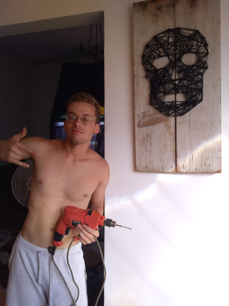
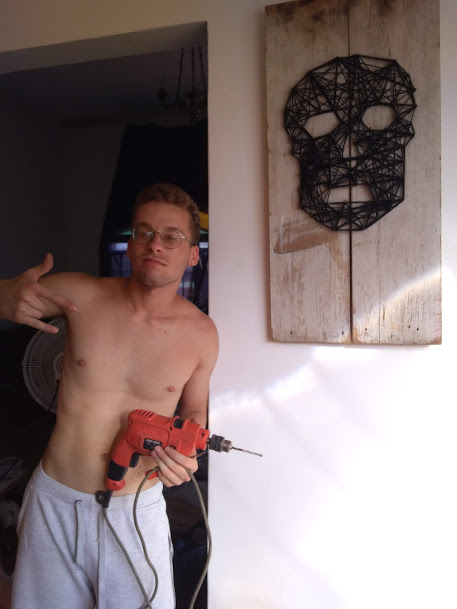

Leite vc é foda te amo muito amigo vai dar certo a gente vai levantar essa grana e você vai conseguir pagar o agiota
Eu não sou muito de fazer spam ou postar coisas públicas mas hj o papo é sério e eu tô aqui pra pedir a ajuda de vcs num rolê que é muito muito muito importante pra mim.
Tem esse amigo meu, o João (talvez vocês conheçam como Leitinho ), nós moramos na mesma república na Limeira e ele é um dos meu melhores amigos desde então.
O Leite tem um coração de ouro, estuda Engenharia Ambiental e sonha em salvar as abelhas da extinção. Ele é o tipo de amigo que está do seu lado na hora de reformar sua casa e que assiste anime contigo quando você está bad por causa das tretas da vida. Sério, o moleque é brabo do brabo.
Leite é diabético, tem um grau mt alto de miopia (sério, é tipo uns 14) e na semana passada ele descobriu que estava com um descolamento na retina e que precisava fazer uma cirurgia urgente no olho direito pq o caso já tava mt avançado e tinha chance de perda da visão.

Pra fazer pelo SUS levariam vários meses e tbm não rolou fazer o procedimento pelo HC da Unicamp. Dado o grau de urgência e de desespero, a família dele acabou pegando a grana emprestada (R$12.500) e ele fez a cirurgia no sábado (08/11/2020).
Se já não fosse pouca treta, ele ainda vai precisar fazer uma segunda cirurgia daqui a 3 meses pra consertar umas fitas dessa primeira.
Dai eles tão organizando uma vakinha pra ajudar nos custos das cirurgias e tals...
Eu sei que a situação não anda fácil pra ninguém, mas deixo aqui meu humilde pedido de colaboração, seja em dinheiro ou em divulgação da causa.
Esse é o apelo de uma amiga que não quer ver um amigo muito querido perder o brilho no olhar.
https://www.vakinha.com.br/r/1524745/677721
PS: se quiser doar por outro meio me da um salve (picpay, itau, neon, tibia coin, etc...)
O site é meme, baseado em Breaking Bad, mas a causa é real. Ajude o leitinho!